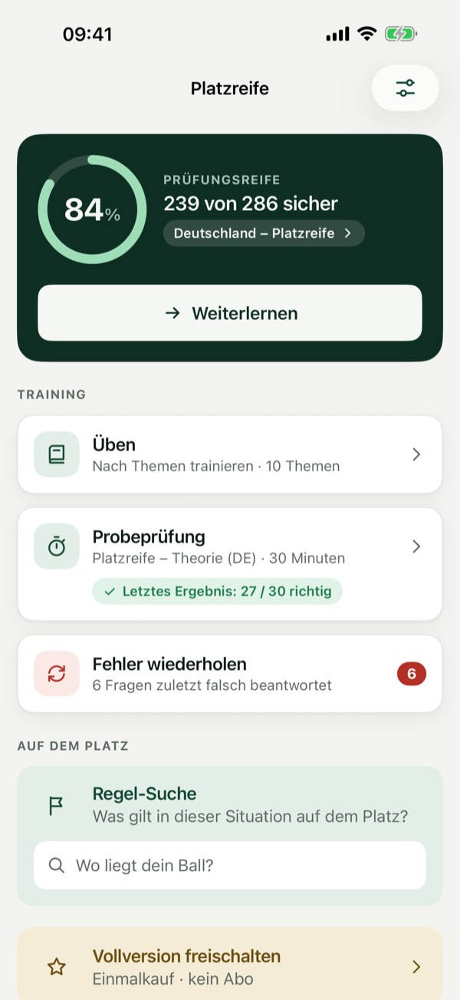
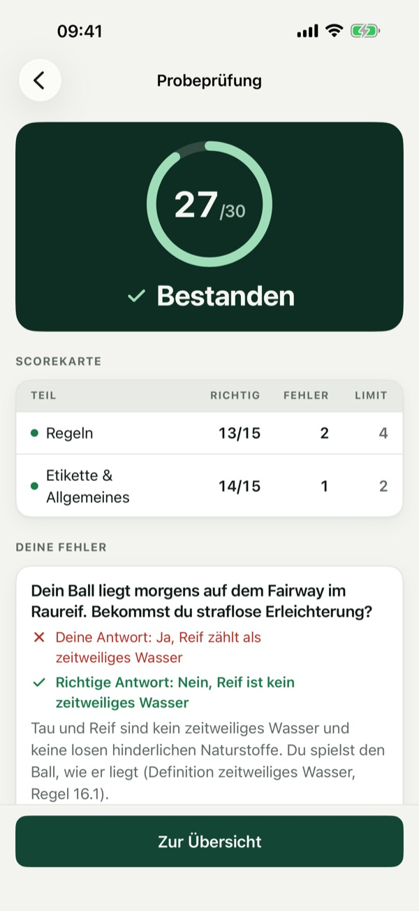
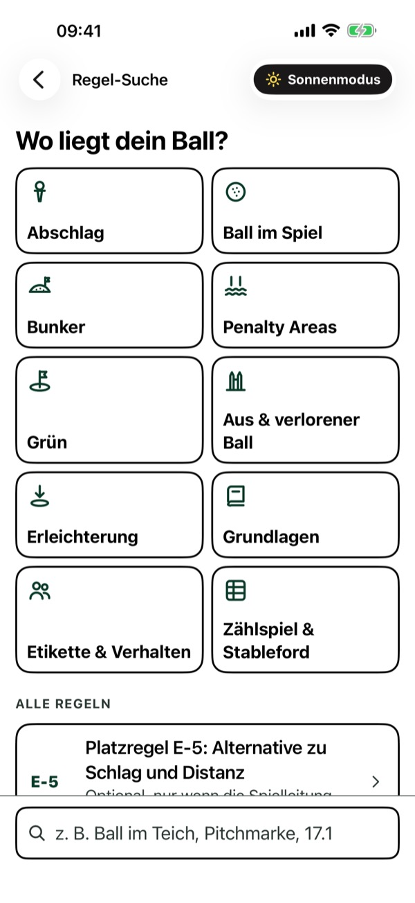
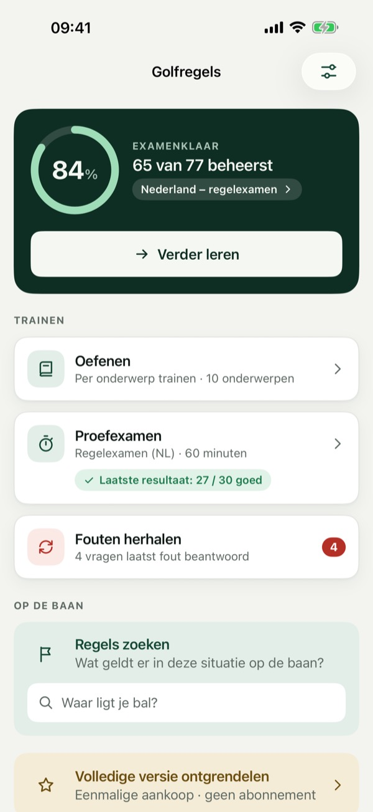
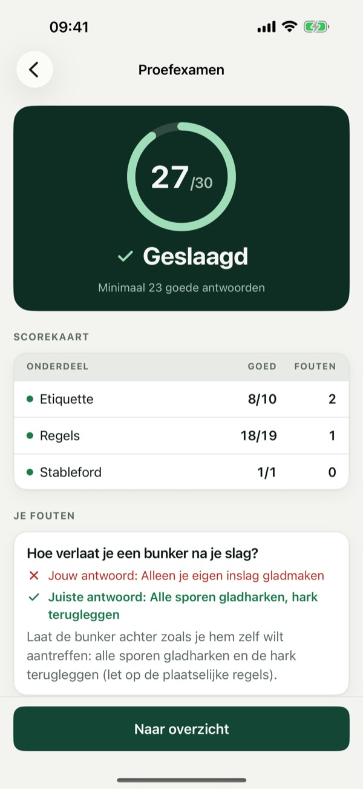
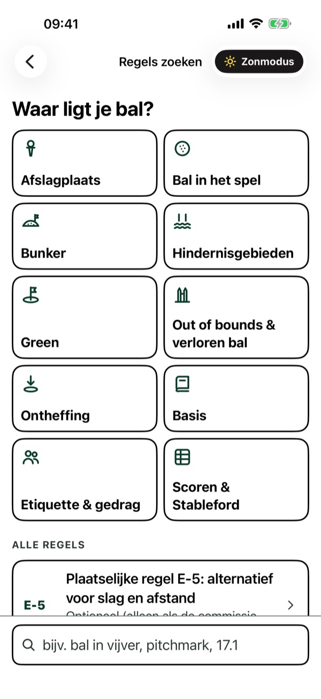

Theorieprüfung üben & bestehen



Bestehe die Theorieprüfung zur Platzreife beim ersten Versuch. Übe Golfregeln und Etikette nach Themen, simuliere die Prüfung mit Zeitlimit (30 Fragen / 30 Minuten) und wiederhole gezielt deine Fehler.
Der Fortschrittsring zeigt, wie viele Fragen du sicher beantwortest. Jede Antwort wird sofort erklärt, bei Regelfragen mit der passenden Regelnummer zum Nachlesen.
Countdown, Fragenübersicht nach Prüfungsteilen und am Ende eine Auswertung pro Teil – mit deinen Fehlern, der richtigen Antwort und der Erklärung.
„Wo liegt dein Ball?“ – vom Abschlag über Bunker und Penalty Area bis zum Grün. Der Sonnenmodus zeigt die Regeln in maximalem Kontrast, gut lesbar in direktem Sonnenlicht.
Wähle das Format für die Niederlande (30 Fragen, 60 Minuten, bestanden ab 23) und lerne auf Deutsch oder Niederländisch.
Einige Fragen pro Thema und eine Probeprüfung sind ohne Kauf nutzbar. Die Vollversion schaltet alle Fragen, unbegrenzte Probeprüfungen und das komplette Fehlertraining frei – als einmaliger In-App-Kauf, ohne Abo. Kein Konto nötig, keine Datenerfassung.
Unabhängige App: nicht verbunden mit dem DGV, der NGF, der R&A oder der USGA. Fragen und Regelzusammenfassungen sind eigenständig formuliert; maßgeblich sind die Offiziellen Golfregeln und dein Golfclub.
Datenschutz: https://baytechbv.github.io/privacy/golf-platzreife/
Nutzungsbedingungen (EULA): https://www.apple.com/legal/internet-services/itunes/dev/stdeula/
GVB oefenen: regels, etiquette



Slaag in één keer voor het regelexamen van je golfvaardigheidsbewijs (GVB). Oefen golfregels en etiquette per onderwerp, doe een proefexamen met tijdslimiet (30 vragen / 60 minuten, 23 goed om te slagen) en herhaal je fouten.
De voortgangsring laat zien hoeveel vragen je zeker goed beantwoordt. Elk antwoord wordt direct uitgelegd, bij regelvragen met het regelnummer erbij.
Afteltimer, overzicht van alle vragen en aan het eind een uitslag per onderdeel – met je fouten, het juiste antwoord en de uitleg.
„Waar ligt je bal?” – van de afslag via bunker en hindernisgebied tot de green. De zonmodus toont de regels met maximaal contrast, goed leesbaar in fel zonlicht.
Kies het Duitse formaat (30 vragen, 30 minuten, foutgrens per onderdeel) en leer in het Nederlands of Duits.
Een deel van de vragen per onderwerp en één proefexamen zijn zonder aankoop te gebruiken. De volledige versie ontgrendelt alle vragen, onbeperkt proefexamens en de complete foutentraining – als eenmalige in-app-aankoop, zonder abonnement. Geen account nodig, er worden geen gegevens verzameld.
Onafhankelijke app: niet verbonden aan de NGF, de R&A, de USGA of de DGV. Vragen en regelsamenvattingen zijn zelf geformuleerd; de officiële golfregels en je club zijn leidend.
Privacy: https://baytechbv.github.io/privacy/golf-platzreife/
Gebruiksvoorwaarden (EULA): https://www.apple.com/legal/internet-services/itunes/dev/stdeula/
Golf rules exam practice
Pass the golf rules theory exam on your first try. Practise golf rules and etiquette by topic, take timed mock exams and repeat your mistakes. The app is in German and Dutch.
Independent app: not affiliated with the DGV, the NGF, The R&A or the USGA. Questions and rule summaries are written independently; the Official Rules of Golf and your club are authoritative.
Privacy: https://baytechbv.github.io/privacy/golf-platzreife/
Terms of Use (EULA): https://www.apple.com/legal/internet-services/itunes/dev/stdeula/